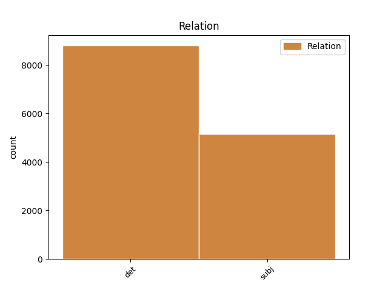
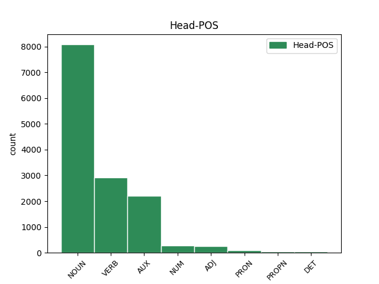
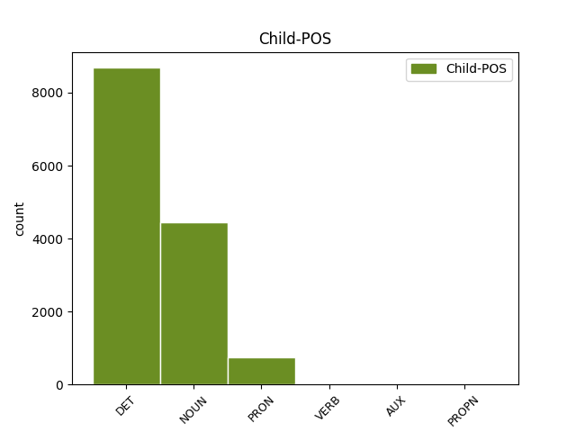

Distribution of features within this leaf



Agreement Rules sorted by frequency.
- When the dependent token is the determiner(det) of the head token, and the dependent token is DET.
1 Dacă _ _ _ _ 0 _ _ _
2 V _ _ _ _ 0 _ _ _
3 este _ _ _ _ 0 _ _ _
4 aproape _ _ _ _ 0 _ _ _
5 de _ _ _ _ 0 _ _ _
6 zero _ _ _ _ 0 _ _ _
7 ( _ _ _ _ 0 _ _ _
8 V _ _ _ _ 0 _ _ _
9 < _ _ _ _ 0 _ _ _
10 35% _ _ _ _ 0 _ _ _
11 ) _ _ _ _ 0 _ _ _
12 , _ _ _ _ 0 _ _ _
13 atunci _ _ _ _ 0 _ _ _
14 populația _ _ _ _ 0 _ _ _
15 studiată _ _ _ _ 0 _ _ _
16 statistic _ _ _ _ 0 _ _ _
17 este _ _ _ _ 0 _ _ _
18 omogenă _ _ _ _ 0 _ _ _
19 și _ _ _ _ 0 _ _ _
20 media _ _ _ _ 0 _ _ _
21 m _ _ _ _ 0 _ _ _
22 este _ _ _ _ 0 _ _ _
23 reprezentativă _ _ _ _ 0 _ _ _
24 pentru _ _ _ _ 0 _ _ _
25 această acest DET Dd3fsr---e Case=Acc,Nom|Gender=Fem|Number=Sing|Person=3|Position=Prenom|PronType=Dem 26 det _ _
26 populație populație NOUN Ncfsrn Case=Acc,Nom|Definite=Ind|Gender=Fem|Number=Sing 0 _ _ _
27 . _ _ _ _ 0 _ _ _
1 Dacă _ _ _ _ 0 _ _ _
2 V _ _ _ _ 0 _ _ _
3 este _ _ _ _ 0 _ _ _
4 aproape _ _ _ _ 0 _ _ _
5 de _ _ _ _ 0 _ _ _
6 zero _ _ _ _ 0 _ _ _
7 ( _ _ _ _ 0 _ _ _
8 V _ _ _ _ 0 _ _ _
9 < _ _ _ _ 0 _ _ _
10 35% _ _ _ _ 0 _ _ _
11 ) _ _ _ _ 0 _ _ _
12 , _ _ _ _ 0 _ _ _
13 atunci _ _ _ _ 0 _ _ _
14 populația _ _ _ _ 0 _ _ _
15 studiată _ _ _ _ 0 _ _ _
16 statistic _ _ _ _ 0 _ _ _
17 este _ _ _ _ 0 _ _ _
18 omogenă _ _ _ _ 0 _ _ _
19 și _ _ _ _ 0 _ _ _
20 media medie NOUN Ncfsry Case=Acc,Nom|Definite=Def|Gender=Fem|Number=Sing 22 subj _ _
21 m _ _ _ _ 0 _ _ _
22 este fi AUX Vmip3s Mood=Ind|Number=Sing|Person=3|Tense=Pres|VerbForm=Fin 0 _ _ _
23 reprezentativă _ _ _ _ 0 _ _ _
24 pentru _ _ _ _ 0 _ _ _
25 această _ _ _ _ 0 _ _ _
26 populație _ _ _ _ 0 _ _ _
27 . _ _ _ _ 0 _ _ _
1 Ridicând _ _ _ _ 0 _ _ _
2 la _ _ _ _ 0 _ _ _
3 pătrat _ _ _ _ 0 _ _ _
4 deviațiile _ _ _ _ 0 _ _ _
5 individuale _ _ _ _ 0 _ _ _
6 acestea acesta PRON Pd3fpr Case=Acc,Nom|Gender=Fem|Number=Plur|Person=3|PronType=Dem 7 subj _ _
7 devin deveni VERB Vmip3p Mood=Ind|Number=Plur|Person=3|Tense=Pres|VerbForm=Fin 0 _ _ _
8 pozitive _ _ _ _ 0 _ _ _
9 ( _ _ _ _ 0 _ _ _
10 sau _ _ _ _ 0 _ _ _
11 zero _ _ _ _ 0 _ _ _
12 ) _ _ _ _ 0 _ _ _
13 . _ _ _ _ 0 _ _ _
1 Orice orice PRON Pi3-sr Case=Acc,Nom|Number=Sing|Person=3|PronType=Ind 4 det _ _
2 astfel _ _ _ _ 0 _ _ _
3 de _ _ _ _ 0 _ _ _
4 funcție funcție NOUN Ncfsrn Case=Acc,Nom|Definite=Ind|Gender=Fem|Number=Sing 0 _ _ _
5 este _ _ _ _ 0 _ _ _
6 restricția _ _ _ _ 0 _ _ _
7 la _ _ _ _ 0 _ _ _
8 [ _ _ _ _ 0 _ _ _
9 - _ _ _ _ 0 _ _ _
10 pi _ _ _ _ 0 _ _ _
11 , _ _ _ _ 0 _ _ _
12 pi _ _ _ _ 0 _ _ _
13 ] _ _ _ _ 0 _ _ _
14 a _ _ _ _ 0 _ _ _
15 unei _ _ _ _ 0 _ _ _
16 funcții _ _ _ _ 0 _ _ _
17 periodice _ _ _ _ 0 _ _ _
18 cu _ _ _ _ 0 _ _ _
19 perioada _ _ _ _ 0 _ _ _
20 2pi _ _ _ _ 0 _ _ _
21 ( _ _ _ _ 0 _ _ _
22 pentru _ _ _ _ 0 _ _ _
23 care _ _ _ _ 0 _ _ _
24 am _ _ _ _ 0 _ _ _
25 păstrat _ _ _ _ 0 _ _ _
26 aceeași _ _ _ _ 0 _ _ _
27 notație _ _ _ _ 0 _ _ _
28 ) _ _ _ _ 0 _ _ _
29 . _ _ _ _ 0 _ _ _
1 Populația _ _ _ _ 0 _ _ _
2 este _ _ _ _ 0 _ _ _
3 o _ _ _ _ 0 _ _ _
4 colecție _ _ _ _ 0 _ _ _
5 ( _ _ _ _ 0 _ _ _
6 mulțime _ _ _ _ 0 _ _ _
7 ) _ _ _ _ 0 _ _ _
8 de _ _ _ _ 0 _ _ _
9 indivizi _ _ _ _ 0 _ _ _
10 , _ _ _ _ 0 _ _ _
11 obiecte _ _ _ _ 0 _ _ _
12 sau _ _ _ _ 0 _ _ _
13 date _ _ _ _ 0 _ _ _
14 numerice _ _ _ _ 0 _ _ _
15 obținute _ _ _ _ 0 _ _ _
16 prin _ _ _ _ 0 _ _ _
17 măsurători _ _ _ _ 0 _ _ _
18 ale _ _ _ _ 0 _ _ _
19 cărei _ _ _ _ 0 _ _ _
20 proprietăți _ _ _ _ 0 _ _ _
21 trebuiesc trebui VERB Vmip3p Mood=Ind|Number=Plur|Person=3|Tense=Pres|VerbForm=Fin 0 _ _ _
22 analizate analiza VERB Vmp--pf Gender=Fem|Number=Plur|VerbForm=Part 21 subj _ SpaceAfter=No
23 . _ _ _ _ 0 _ _ _
1 problema _ _ _ _ 0 _ _ _
2 de _ _ _ _ 0 _ _ _
3 probabilitate _ _ _ _ 0 _ _ _
4 este fi AUX Vmip3s Mood=Ind|Number=Sing|Person=3|Tense=Pres|VerbForm=Fin 0 _ _ _
5 dacă _ _ _ _ 0 _ _ _
6 scoatem _ _ _ _ 0 _ _ _
7 o _ _ _ _ 0 _ _ _
8 bilă _ _ _ _ 0 _ _ _
9 , _ _ _ _ 0 _ _ _
10 care _ _ _ _ 0 _ _ _
11 este fi AUX Vmip3s Mood=Ind|Number=Sing|Person=3|Tense=Pres|VerbForm=Fin 4 subj _ _
12 șansa _ _ _ _ 0 _ _ _
13 ca _ _ _ _ 0 _ _ _
14 aceasta _ _ _ _ 0 _ _ _
15 să _ _ _ _ 0 _ _ _
16 fie _ _ _ _ 0 _ _ _
17 albă _ _ _ _ 0 _ _ _
18 ? _ _ _ _ 0 _ _ _
1 Chiar _ _ _ _ 0 _ _ _
2 și _ _ _ _ 0 _ _ _
3 în _ _ _ _ 0 _ _ _
4 aceste _ _ _ _ 0 _ _ _
5 condiții _ _ _ _ 0 _ _ _
6 , _ _ _ _ 0 _ _ _
7 au _ _ _ _ 0 _ _ _
8 rămas _ _ _ _ 0 _ _ _
9 în _ _ _ _ 0 _ _ _
10 picioare _ _ _ _ 0 _ _ _
11 multe _ _ _ _ 0 _ _ _
12 clădiri _ _ _ _ 0 _ _ _
13 importante _ _ _ _ 0 _ _ _
14 și _ _ _ _ 0 _ _ _
15 , _ _ _ _ 0 _ _ _
16 pe _ _ _ _ 0 _ _ _
17 bună _ _ _ _ 0 _ _ _
18 dreptate _ _ _ _ 0 _ _ _
19 , _ _ _ _ 0 _ _ _
20 Iașii Iași PROPN Npmpry Case=Acc,Nom|Definite=Def|Gender=Masc|Number=Plur 21 subj _ _
21 sunt fi VERB Vmip3p Mood=Ind|Number=Plur|Person=3|Tense=Pres|VerbForm=Fin 0 _ _ _
22 considerați _ _ _ _ 0 _ _ _
23 un _ _ _ _ 0 _ _ _
24 adevărat _ _ _ _ 0 _ _ _
25 muzeu _ _ _ _ 0 _ _ _
26 ; _ _ _ _ 0 _ _ _
27 în _ _ _ _ 0 _ _ _
28 fiecare _ _ _ _ 0 _ _ _
29 colț _ _ _ _ 0 _ _ _
30 al _ _ _ _ 0 _ _ _
31 său _ _ _ _ 0 _ _ _
32 se _ _ _ _ 0 _ _ _
33 simt _ _ _ _ 0 _ _ _
34 urmele _ _ _ _ 0 _ _ _
35 trecerii _ _ _ _ 0 _ _ _
36 unei _ _ _ _ 0 _ _ _
37 personalități _ _ _ _ 0 _ _ _
38 de _ _ _ _ 0 _ _ _
39 seamă _ _ _ _ 0 _ _ _
40 a _ _ _ _ 0 _ _ _
41 literaturii _ _ _ _ 0 _ _ _
42 , _ _ _ _ 0 _ _ _
43 științei _ _ _ _ 0 _ _ _
44 , _ _ _ _ 0 _ _ _
45 filozofiei _ _ _ _ 0 _ _ _
46 , _ _ _ _ 0 _ _ _
47 istoriei _ _ _ _ 0 _ _ _
48 sau _ _ _ _ 0 _ _ _
49 politicii _ _ _ _ 0 _ _ _
50 românești _ _ _ _ 0 _ _ _
51 . _ _ _ _ 0 _ _ _
1 Grigore _ _ _ _ 0 _ _ _
2 Niculescu _ _ _ _ 0 _ _ _
3 , _ _ _ _ 0 _ _ _
4 de _ _ _ _ 0 _ _ _
5 Istorie _ _ _ _ 0 _ _ _
6 și _ _ _ _ 0 _ _ _
7 Ion _ _ _ _ 0 _ _ _
8 Costescu _ _ _ _ 0 _ _ _
9 , _ _ _ _ 0 _ _ _
10 de _ _ _ _ 0 _ _ _
11 Muzică _ _ _ _ 0 _ _ _
12 ― _ _ _ _ 0 _ _ _
13 toți tot DET Di3mpr Case=Acc,Nom|Gender=Masc|Number=Plur|Person=3|PronType=Ind 15 subj _ _
14 adevărați _ _ _ _ 0 _ _ _
15 stâlpi stâlp NOUN Ncmp-n Definite=Ind|Gender=Masc|Number=Plur 0 _ _ _
16 ai _ _ _ _ 0 _ _ _
17 liceului _ _ _ _ 0 _ _ _
18 , _ _ _ _ 0 _ _ _
19 impresionante _ _ _ _ 0 _ _ _
20 figuri _ _ _ _ 0 _ _ _
21 , _ _ _ _ 0 _ _ _
22 care _ _ _ _ 0 _ _ _
23 au _ _ _ _ 0 _ _ _
24 înscris _ _ _ _ 0 _ _ _
25 o _ _ _ _ 0 _ _ _
26 pagină _ _ _ _ 0 _ _ _
27 de _ _ _ _ 0 _ _ _
28 neuitat _ _ _ _ 0 _ _ _
29 în _ _ _ _ 0 _ _ _
30 cultura _ _ _ _ 0 _ _ _
31 românească _ _ _ _ 0 _ _ _
32 . _ _ _ _ 0 _ _ _
Disagree Examples:
1 Femeile _ _ _ _ 0 _ _ _
2 , _ _ _ _ 0 _ _ _
3 și _ _ _ _ 0 _ _ _
4 mai _ _ _ _ 0 _ _ _
5 ales _ _ _ _ 0 _ _ _
6 cele _ _ _ _ 0 _ _ _
7 tinere _ _ _ _ 0 _ _ _
8 , _ _ _ _ 0 _ _ _
9 erau _ _ _ _ 0 _ _ _
10 întotdeauna _ _ _ _ 0 _ _ _
11 cele _ _ _ _ 0 _ _ _
12 mai _ _ _ _ 0 _ _ _
13 fanatice _ _ _ _ 0 _ _ _
14 adepte _ _ _ _ 0 _ _ _
15 ale al DET Tsfp Gender=Fem|Number=Plur|Poss=Yes|PronType=Prs 16 det _ _
16 Partidului partid NOUN Ncmsoy Case=Dat,Gen|Definite=Def|Gender=Masc|Number=Sing 0 _ _ _
17 , _ _ _ _ 0 _ _ _
18 cele _ _ _ _ 0 _ _ _
19 care _ _ _ _ 0 _ _ _
20 înghițeau _ _ _ _ 0 _ _ _
21 slogane _ _ _ _ 0 _ _ _
22 , _ _ _ _ 0 _ _ _
23 care _ _ _ _ 0 _ _ _
24 făceau _ _ _ _ 0 _ _ _
25 spionaj _ _ _ _ 0 _ _ _
26 amator _ _ _ _ 0 _ _ _
27 și _ _ _ _ 0 _ _ _
28 te _ _ _ _ 0 _ _ _
29 turnau _ _ _ _ 0 _ _ _
30 dacă _ _ _ _ 0 _ _ _
31 te _ _ _ _ 0 _ _ _
32 miroseau _ _ _ _ 0 _ _ _
33 de _ _ _ _ 0 _ _ _
34 neortodoxie _ _ _ _ 0 _ _ _
35 . _ _ _ _ 0 _ _ _
1 Goldstein _ _ _ _ 0 _ _ _
2 era _ _ _ _ 0 _ _ _
3 un _ _ _ _ 0 _ _ _
4 renegat _ _ _ _ 0 _ _ _
5 și _ _ _ _ 0 _ _ _
6 un _ _ _ _ 0 _ _ _
7 decăzut _ _ _ _ 0 _ _ _
8 care _ _ _ _ 0 _ _ _
9 , _ _ _ _ 0 _ _ _
10 odată _ _ _ _ 0 _ _ _
11 , _ _ _ _ 0 _ _ _
12 cu _ _ _ _ 0 _ _ _
13 mult _ _ _ _ 0 _ _ _
14 timp _ _ _ _ 0 _ _ _
15 în _ _ _ _ 0 _ _ _
16 urmă _ _ _ _ 0 _ _ _
17 - _ _ _ _ 0 _ _ _
18 nimeni _ _ _ _ 0 _ _ _
19 nu _ _ _ _ 0 _ _ _
20 -și _ _ _ _ 0 _ _ _
21 mai _ _ _ _ 0 _ _ _
22 amintea _ _ _ _ 0 _ _ _
23 cu _ _ _ _ 0 _ _ _
24 siguranță _ _ _ _ 0 _ _ _
25 cât _ _ _ _ 0 _ _ _
26 anume _ _ _ _ 0 _ _ _
27 - _ _ _ _ 0 _ _ _
28 fusese _ _ _ _ 0 _ _ _
29 una _ _ _ _ 0 _ _ _
30 din _ _ _ _ 0 _ _ _
31 figurile _ _ _ _ 0 _ _ _
32 de _ _ _ _ 0 _ _ _
33 frunte _ _ _ _ 0 _ _ _
34 ale al DET Tsfp Gender=Fem|Number=Plur|Poss=Yes|PronType=Prs 35 det _ _
35 Partidului partid NOUN Ncmsoy Case=Dat,Gen|Definite=Def|Gender=Masc|Number=Sing 0 _ _ _
36 , _ _ _ _ 0 _ _ _
37 aproape _ _ _ _ 0 _ _ _
38 la _ _ _ _ 0 _ _ _
39 același _ _ _ _ 0 _ _ _
40 nivel _ _ _ _ 0 _ _ _
41 cu _ _ _ _ 0 _ _ _
42 Fratele _ _ _ _ 0 _ _ _
43 cel _ _ _ _ 0 _ _ _
44 Mare _ _ _ _ 0 _ _ _
45 însuși _ _ _ _ 0 _ _ _
46 , _ _ _ _ 0 _ _ _
47 dar _ _ _ _ 0 _ _ _
48 pe _ _ _ _ 0 _ _ _
49 urmă _ _ _ _ 0 _ _ _
50 se _ _ _ _ 0 _ _ _
51 angajase _ _ _ _ 0 _ _ _
52 în _ _ _ _ 0 _ _ _
53 activități _ _ _ _ 0 _ _ _
54 contrarevoluționare _ _ _ _ 0 _ _ _
55 , _ _ _ _ 0 _ _ _
56 fusese _ _ _ _ 0 _ _ _
57 condamnat _ _ _ _ 0 _ _ _
58 la _ _ _ _ 0 _ _ _
59 moarte _ _ _ _ 0 _ _ _
60 dar _ _ _ _ 0 _ _ _
61 , _ _ _ _ 0 _ _ _
62 nu _ _ _ _ 0 _ _ _
63 se _ _ _ _ 0 _ _ _
64 știe _ _ _ _ 0 _ _ _
65 cum _ _ _ _ 0 _ _ _
66 , _ _ _ _ 0 _ _ _
67 scăpase _ _ _ _ 0 _ _ _
68 și _ _ _ _ 0 _ _ _
69 dispăruse _ _ _ _ 0 _ _ _
70 ca _ _ _ _ 0 _ _ _
71 prin _ _ _ _ 0 _ _ _
72 minune _ _ _ _ 0 _ _ _
73 . _ _ _ _ 0 _ _ _
1 Îl _ _ _ _ 0 _ _ _
2 insultase _ _ _ _ 0 _ _ _
3 pe _ _ _ _ 0 _ _ _
4 Fratele _ _ _ _ 0 _ _ _
5 cel _ _ _ _ 0 _ _ _
6 Mare _ _ _ _ 0 _ _ _
7 , _ _ _ _ 0 _ _ _
8 denunțase _ _ _ _ 0 _ _ _
9 dictatura _ _ _ _ 0 _ _ _
10 Partidului _ _ _ _ 0 _ _ _
11 , _ _ _ _ 0 _ _ _
12 ceruse _ _ _ _ 0 _ _ _
13 încheierea _ _ _ _ 0 _ _ _
14 imediată _ _ _ _ 0 _ _ _
15 a _ _ _ _ 0 _ _ _
16 păcii _ _ _ _ 0 _ _ _
17 cu _ _ _ _ 0 _ _ _
18 Eurasia _ _ _ _ 0 _ _ _
19 , _ _ _ _ 0 _ _ _
20 solicitase _ _ _ _ 0 _ _ _
21 libertatea _ _ _ _ 0 _ _ _
22 cuvântului _ _ _ _ 0 _ _ _
23 , _ _ _ _ 0 _ _ _
24 libertatea _ _ _ _ 0 _ _ _
25 presei _ _ _ _ 0 _ _ _
26 , _ _ _ _ 0 _ _ _
27 libertatea _ _ _ _ 0 _ _ _
28 de _ _ _ _ 0 _ _ _
29 întrunire _ _ _ _ 0 _ _ _
30 , _ _ _ _ 0 _ _ _
31 libertatea _ _ _ _ 0 _ _ _
32 de _ _ _ _ 0 _ _ _
33 gândire _ _ _ _ 0 _ _ _
34 , _ _ _ _ 0 _ _ _
35 zbierând _ _ _ _ 0 _ _ _
36 ca _ _ _ _ 0 _ _ _
37 un _ _ _ _ 0 _ _ _
38 isteric _ _ _ _ 0 _ _ _
39 despre _ _ _ _ 0 _ _ _
40 trădarea _ _ _ _ 0 _ _ _
41 Revoluției _ _ _ _ 0 _ _ _
42 - _ _ _ _ 0 _ _ _
43 totul _ _ _ _ 0 _ _ _
44 într- _ _ _ _ 0 _ _ _
45 o _ _ _ _ 0 _ _ _
46 vorbire _ _ _ _ 0 _ _ _
47 polisilabică _ _ _ _ 0 _ _ _
48 rapidă _ _ _ _ 0 _ _ _
49 , _ _ _ _ 0 _ _ _
50 ca _ _ _ _ 0 _ _ _
51 un _ _ _ _ 0 _ _ _
52 fel _ _ _ _ 0 _ _ _
53 de _ _ _ _ 0 _ _ _
54 parodiere _ _ _ _ 0 _ _ _
55 a _ _ _ _ 0 _ _ _
56 stilului _ _ _ _ 0 _ _ _
57 obișnuit _ _ _ _ 0 _ _ _
58 al al DET Tsms Gender=Masc|Number=Sing|Poss=Yes|PronType=Prs 59 det _ _
59 oratorilor orator NOUN Ncmpoy Case=Dat,Gen|Definite=Def|Gender=Masc|Number=Plur 0 _ _ _
60 Partidului _ _ _ _ 0 _ _ _
61 , _ _ _ _ 0 _ _ _
62 care _ _ _ _ 0 _ _ _
63 conținea _ _ _ _ 0 _ _ _
64 chiar _ _ _ _ 0 _ _ _
65 și _ _ _ _ 0 _ _ _
66 cuvinte _ _ _ _ 0 _ _ _
67 din _ _ _ _ 0 _ _ _
68 Nouvorbă _ _ _ _ 0 _ _ _
69 ; _ _ _ _ 0 _ _ _
70 de _ _ _ _ 0 _ _ _
71 fapt _ _ _ _ 0 _ _ _
72 mult _ _ _ _ 0 _ _ _
73 mai _ _ _ _ 0 _ _ _
74 multe _ _ _ _ 0 _ _ _
75 asemenea _ _ _ _ 0 _ _ _
76 cuvinte _ _ _ _ 0 _ _ _
77 decât _ _ _ _ 0 _ _ _
78 folosea _ _ _ _ 0 _ _ _
79 oricare _ _ _ _ 0 _ _ _
80 membru _ _ _ _ 0 _ _ _
81 al _ _ _ _ 0 _ _ _
82 Partidului _ _ _ _ 0 _ _ _
83 în _ _ _ _ 0 _ _ _
84 viața _ _ _ _ 0 _ _ _
85 de _ _ _ _ 0 _ _ _
86 toate _ _ _ _ 0 _ _ _
87 zilele _ _ _ _ 0 _ _ _
88 . _ _ _ _ 0 _ _ _
1 Și _ _ _ _ 0 _ _ _
2 în _ _ _ _ 0 _ _ _
3 tot _ _ _ _ 0 _ _ _
4 timpul _ _ _ _ 0 _ _ _
5 ăsta _ _ _ _ 0 _ _ _
6 , _ _ _ _ 0 _ _ _
7 ca _ _ _ _ 0 _ _ _
8 să _ _ _ _ 0 _ _ _
9 nu _ _ _ _ 0 _ _ _
10 aibă _ _ _ _ 0 _ _ _
11 nimeni _ _ _ _ 0 _ _ _
12 nici _ _ _ _ 0 _ _ _
13 cel _ _ _ _ 0 _ _ _
14 mai _ _ _ _ 0 _ _ _
15 mic _ _ _ _ 0 _ _ _
16 dubiu _ _ _ _ 0 _ _ _
17 asupra _ _ _ _ 0 _ _ _
18 realității _ _ _ _ 0 _ _ _
19 pe _ _ _ _ 0 _ _ _
20 care _ _ _ _ 0 _ _ _
21 o _ _ _ _ 0 _ _ _
22 acopereau _ _ _ _ 0 _ _ _
23 lătrăturile _ _ _ _ 0 _ _ _
24 viclene _ _ _ _ 0 _ _ _
25 ale _ _ _ _ 0 _ _ _
26 lui _ _ _ _ 0 _ _ _
27 Goldstein _ _ _ _ 0 _ _ _
28 , _ _ _ _ 0 _ _ _
29 în _ _ _ _ 0 _ _ _
30 spatele _ _ _ _ 0 _ _ _
31 lui _ _ _ _ 0 _ _ _
32 , _ _ _ _ 0 _ _ _
33 pe _ _ _ _ 0 _ _ _
34 tele-ecran _ _ _ _ 0 _ _ _
35 , _ _ _ _ 0 _ _ _
36 mărșăluiau _ _ _ _ 0 _ _ _
37 interminabile _ _ _ _ 0 _ _ _
38 coloane _ _ _ _ 0 _ _ _
39 ale al DET Tsfp Gender=Fem|Number=Plur|Poss=Yes|PronType=Prs 40 det _ _
40 armatei armată NOUN Ncfsoy Case=Dat,Gen|Definite=Def|Gender=Fem|Number=Sing 0 _ _ _
41 eurasiene _ _ _ _ 0 _ _ _
42 - _ _ _ _ 0 _ _ _
43 rânduri _ _ _ _ 0 _ _ _
44 peste _ _ _ _ 0 _ _ _
45 rânduri _ _ _ _ 0 _ _ _
46 de _ _ _ _ 0 _ _ _
47 bărbați _ _ _ _ 0 _ _ _
48 solizi _ _ _ _ 0 _ _ _
49 , _ _ _ _ 0 _ _ _
50 cu _ _ _ _ 0 _ _ _
51 fețe _ _ _ _ 0 _ _ _
52 asiatice _ _ _ _ 0 _ _ _
53 imobile _ _ _ _ 0 _ _ _
54 , _ _ _ _ 0 _ _ _
55 care _ _ _ _ 0 _ _ _
56 veneau _ _ _ _ 0 _ _ _
57 în _ _ _ _ 0 _ _ _
58 valuri _ _ _ _ 0 _ _ _
59 până _ _ _ _ 0 _ _ _
60 la _ _ _ _ 0 _ _ _
61 suprafața _ _ _ _ 0 _ _ _
62 ecranului _ _ _ _ 0 _ _ _
63 și _ _ _ _ 0 _ _ _
64 pe _ _ _ _ 0 _ _ _
65 urmă _ _ _ _ 0 _ _ _
66 dispăreau _ _ _ _ 0 _ _ _
67 pentru _ _ _ _ 0 _ _ _
68 a _ _ _ _ 0 _ _ _
69 fi _ _ _ _ 0 _ _ _
70 înlocuite _ _ _ _ 0 _ _ _
71 de _ _ _ _ 0 _ _ _
72 altele _ _ _ _ 0 _ _ _
73 exact _ _ _ _ 0 _ _ _
74 la _ _ _ _ 0 _ _ _
75 fel _ _ _ _ 0 _ _ _
76 . _ _ _ _ 0 _ _ _
1 Tropăitul _ _ _ _ 0 _ _ _
2 ritmic _ _ _ _ 0 _ _ _
3 și _ _ _ _ 0 _ _ _
4 monoton _ _ _ _ 0 _ _ _
5 al al DET Tsms Gender=Masc|Number=Sing|Poss=Yes|PronType=Prs 6 det _ _
6 cizmelor cizmă NOUN Ncfpoy Case=Dat,Gen|Definite=Def|Gender=Fem|Number=Plur 0 _ _ _
7 soldaților _ _ _ _ 0 _ _ _
8 forma _ _ _ _ 0 _ _ _
9 fundalul _ _ _ _ 0 _ _ _
10 vocii _ _ _ _ 0 _ _ _
11 behăitoare _ _ _ _ 0 _ _ _
12 a _ _ _ _ 0 _ _ _
13 lui _ _ _ _ 0 _ _ _
14 Goldstein _ _ _ _ 0 _ _ _
15 . _ _ _ _ 0 _ _ _